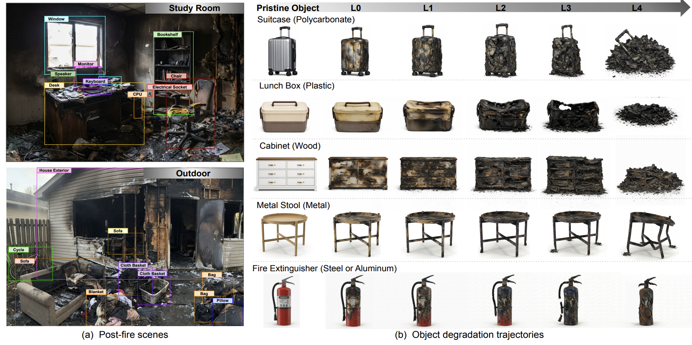
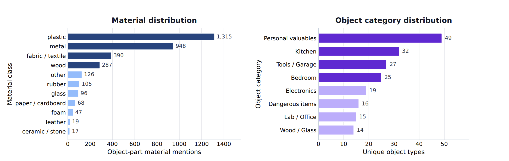
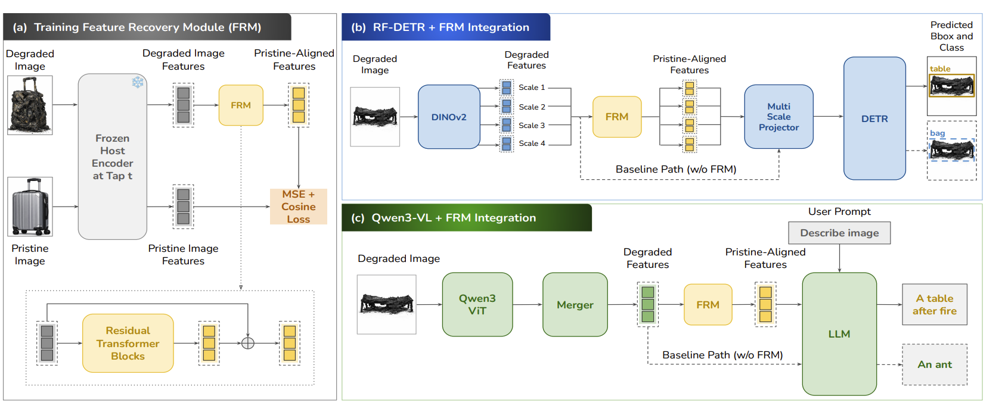
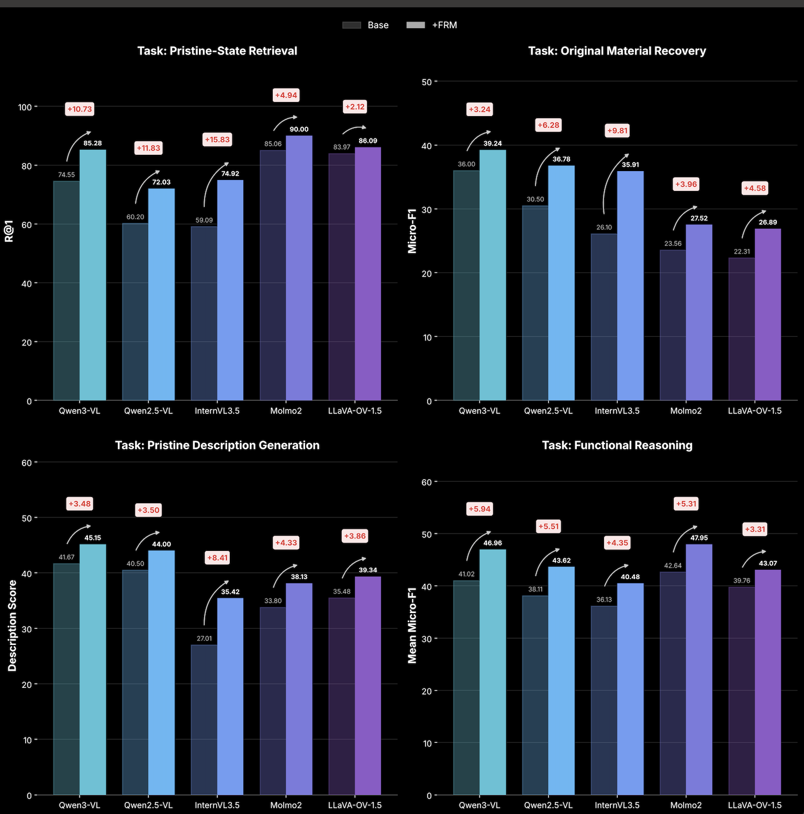

Feature Recovery for Object Understanding After Irreversible Fire Damage
Introduces the first transformation-aware dataset for post-fire object understanding, along with a lightweight plug-and-play module that maps degraded encoder features to pristine-aligned representations while keeping the host model frozen. Averaged across severity levels, the module improves retrieval by 12.5%, material recovery by 20.1%, description generation by 13.2%, and functional reasoning by 12.4%.
Overview
Objects in post-fire environments often undergo irreversible physical transformations that change their geometry, material state, and visual appearance. Detecting and identifying these remnants is critical for locating hazards, reconstructing pre-incident contents, and inventorying losses. Unlike standard image corruptions, these degradations affect the physical structure of the object itself.
To study this setting, we introduce TRACE, a transformation-aware benchmark for post-fire object understanding. TRACE contains 21.4K real-image-grounded synthetic scenes and paired object-level pristine-to-degraded progressions spanning 499 object identities across 189 categories. We define five tasks targeting localization and pre-degradation understanding: degraded-object detection, pristine-state recovery and retrieval, original material recovery, pristine description generation, and functional reasoning.
Existing models degrade sharply with severity. From the least to the most severe level, RF-DETR mAP decreases by 71% relative, while InternVL3.5 retrieval R@1 falls from 93.85 to 28.11. To address this, we propose Feature Recovery Module (FRM), a lightweight plug-and-play module that maps degraded encoder features to pristine-aligned representations while keeping the host frozen. Trained only with paired feature supervision, FRM improves scene-level detection, CLIP/SigLIP2 feature recovery, and all four object-level VLM tasks, with larger gains under more severe degradation. On 100 held-out real post-fire scenes, FRM also improves detection by 16.1% relative. Across VLM hosts and severity levels, relative gains average 12.5% for retrieval, 20.1% for material recovery, 13.2% for description generation, and 12.4% for functional reasoning.
Dataset

Existing benchmarks provide clean-corrupted image pairs, matched adverse-condition scenes, or disaster damage annotations. TRACE instead tracks individual objects through progressive physical degradation with a pristine reference.
| Dataset | Setting | Reference pairing | Physical object trajectory |
|---|---|---|---|
| ImageNet-C | Image corruption | Clean image | ✗ |
| COCO-C | Detection corruption | Clean image | ✗ |
| ACDC | Adverse driving conditions | Matched normal scene | ✗ |
| xBD | Disaster building damage | Pre/post satellite | ✗ |
| RescueNet | Post-hurricane UAV damage | ✗ | ✗ |
| Incidents1M | Incident images | ✗ | ✗ |
| TRACE (Ours) | Post-fire object damage | Pristine object | L0–L4 |

Benchmark Tasks
Output: bounding boxes + mapped COCO classes.
Output: recovered visual embeddings.
Output: ranked pristine gallery.
Output: material label set.
Output: single-sentence description.
Output: function tags + restoration materials.
Feature Recovery Module

Results
Bar plots summarize the performance improvement of FRM across all tasks and models.
View detailed tabular results
Each model is evaluated with its encoder frozen, with and without the feature mapping module (FRM). Δ is the absolute gain in points. For each task, the highlighted row indicates the best +FRM score across all evaluated models.
| Model | Base | +FRM | Δ |
|---|---|---|---|
| Task: Pristine-State Retrieval (R@1) | |||
| Qwen3-VL | 74.55 | 85.28 | +10.73 |
| Qwen2.5-VL | 60.20 | 72.03 | +11.83 |
| InternVL3.5 | 59.09 | 74.92 | +15.83 |
| Molmo2 | 85.06 | 90.00 | +4.94 |
| LLaVA-OV-1.5 | 83.97 | 86.09 | +2.12 |
| Task: Original Material Recovery (micro-F1) | |||
| Qwen3-VL | 36.00 | 39.24 | +3.24 |
| Qwen2.5-VL | 30.50 | 36.78 | +6.28 |
| InternVL3.5 | 26.10 | 35.91 | +9.81 |
| Molmo2 | 23.56 | 27.52 | +3.96 |
| LLaVA-OV-1.5 | 22.31 | 26.89 | +4.58 |
| Task: Pristine Description Generation (description score) | |||
| Qwen3-VL | 41.67 | 45.15 | +3.48 |
| Qwen2.5-VL | 40.50 | 44.00 | +3.50 |
| InternVL3.5 | 27.01 | 35.42 | +8.41 |
| Molmo2 | 33.80 | 38.13 | +4.33 |
| LLaVA-OV-1.5 | 35.48 | 39.34 | +3.86 |
| Task: Functional Reasoning (mean micro-F1) | |||
| Qwen3-VL | 41.02 | 46.96 | +5.94 |
| Qwen2.5-VL | 38.11 | 43.62 | +5.51 |
| InternVL3.5 | 36.13 | 40.48 | +4.35 |
| Molmo2 | 42.64 | 47.95 | +5.31 |
| LLaVA-OV-1.5 | 39.76 | 43.07 | +3.31 |

Together, these results show that a lightweight, plug-and-play feature mapping consistently recovers object understanding lost to fire damage across model families, without retraining the host model.
Ethics and Bibtex
All real-word images have free use lisence and all generated images are in the compliance with the lisense by Gemini 3 Image Pro. TRACE and FRM is released for research on robust, safety-critical multimodal systems and may not be used for surveillance, profiling, or non-consensual monitoring.
@misc{tiwari2025featurerevoryrobustfiredetection,
title = {Feature Recovery for Object Understanding After Irreversible Fire Damage},
author = {Aditi Tiwari and Sofia Stoica and Savya Khosla and David Forsyth and Heng Ji},
year = {2026},
eprint = {2609.12078},
archivePrefix = {arXiv},
primaryClass = {cs.CV},
url = {https://arxiv.org/abs/2609.12078},
}